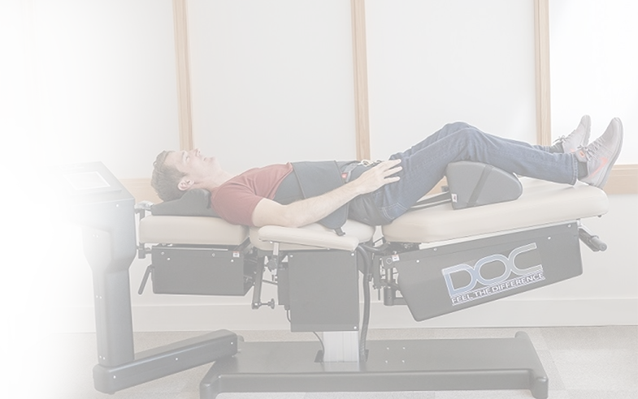

Phục hồi đĩa đệm không phẫu thuật
Hiện nay có rất nhiều phương pháp điều trị thoát vị đĩa đệm như dùng thuốc, vật lý trị liệu, châm cứu, xoa bóp… kết hợp cùng các bài tập luyện hỗ trợ khác. Tuy nhiên, những phương pháp này dễ làm chệch hướng điều trị và đánh lừa cảm giác của người bệnh khi giảm các cơn đau nhanh chóng, trong khi các sai lệch và tổn thương ở đĩa đệm vẫn tồn tại. Khi tình trạng thoát vị nặng, bác sĩ có thể khuyên bệnh nhân nên phẫu thuật. Phương pháp này tuy có tỉ lệ thành công cao nhưng có khả năng để lại nhiều rủi ro và di chứng về sau, cùng nguy cơ tái phát sau phẫu thuật khá cao.
Do vậy, điều trị thoát vị đĩa đệm với phương pháp CHIROPRACTIC kết hợp GIẢM ÁP CỘT SỐNG KHÔNG PHẪU THUẬT + PHYSIO THERAPY + VẬN ĐỘNG TRỊ LIỆU vẫn được coi là giải pháp tối ưu với các tiêu chí vượt trội:
ĐIỀU TRỊ
từ gốc bệnh
từ gốc bệnh
KHÔNG
tiêm
tiêm
KHÔNG
dùng thuốc
dùng thuốc
HẠN CHẾ
các nguy cơ phẫu thuật
các nguy cơ phẫu thuật
Tùy theo tình trạng bệnh lý của mỗi bệnh nhân, các Giáo sư, Bác sĩ tại IREC sẽ lên phác đồ điều trị cho từng giai đoạn nhằm tối đa hóa hiệu quả liệu trình & rút ngắn thời gian điều trị.

D.O.C - HỆ THỐNG GIẢM ÁP CỘT SỐNG KHÔNG PHẪU THUẬT
D.O.C được lập trình sẵn 12 chương trình cho các phác đồ điều trị thoát vị đĩa đệm khác nhau, cùng với khả năng cảm biến chính xác từng điểm sai lệch trên cột sống để tính toán lực kéo phù hợp với phản ứng của cơ và khớp giúp đạt hiệu quả điều trị tối ưu, rút ngắn được thời điều trị so với giường kéo thông thường.
Điều đặc biệt của thiết bị này còn nằm ở chức năng sử dụng lực logarithm – hỗ trợ đắc lực về giảm áp suất nội đĩa đệm:
- Giúp mở rộng không gian giữa các khớp xương.
- Tăng cường trao đổi chất trong đĩa đệm.
- Tích trữ các chất dinh dưỡng và đưa lưu lượng máu vào đĩa đệm giúp làm lành tổn thương.
D.O.C không giới hạn vị trí điều trị: Hệ thống điều khiển tiên tiến của thiết bị này còn có chức năng tùy chỉnh đa dạng và giám sát góc nghiêng với nhiều tư thế nằm khác nhau (co, duỗi, thẳng, nghiêng, xoay, uốn cong) nhằm xác định chính xác vị trí các đĩa đệm đang gây ra các cơn đau cho bệnh nhân, giúp điều trị trúng đích với tỉ lệ thành công tới 80%.
Tại Việt Nam, IREC tự hào là đơn vị sở hữu máy giảm áp cột sống hiện đại nhất thế giới hiện nay.